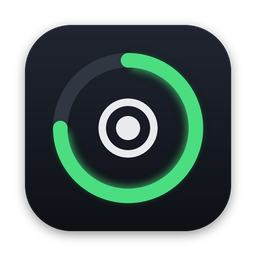

A menu bar timer for the Mac that blocks distracting websites and hides distracting apps until the session ends.
Free and open source. macOS 14 or later. English and Turkish.
Start a 15, 25, 45, 60 or 90 minute session from the menu bar, with optional short and long breaks.
Sites on your list stop loading in every browser, and the apps you pick stay hidden until time is up.
A 7-day chart and a daily streak, stored only on your Mac.
An optional full-screen countdown that hides the Dock and menu bar. Esc returns to the menu bar.
A 12-hour dial for the day. Drag on the ring to add a task, then start a focus session from it.
Odak adds a marked section to /etc/hosts that points each blocked domain to 0.0.0.0, and removes it when the session ends, when you quit, or on the next launch after a crash. Nothing outside that section is touched.
Editing that file needs root. On setup Odak asks for your admin password once and installs a small helper script plus this sudoers rule, which allows that one script and nothing else:
yourname ALL=(root) NOPASSWD: /Library/PrivilegedHelperTools/app.odak.blockThe helper only accepts plain domain names. Browsers with secure DNS (DNS over HTTPS) turned on, some VPNs, and connections that are already open can get around it. You can always stop a session. It is a nudge, not a lock.
$ brew install --cask slymnyg/tap/odak
Or download the zip from GitHub Releases. No account, no analytics, no network access.